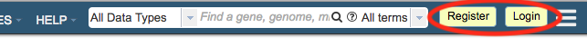
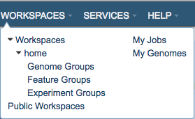
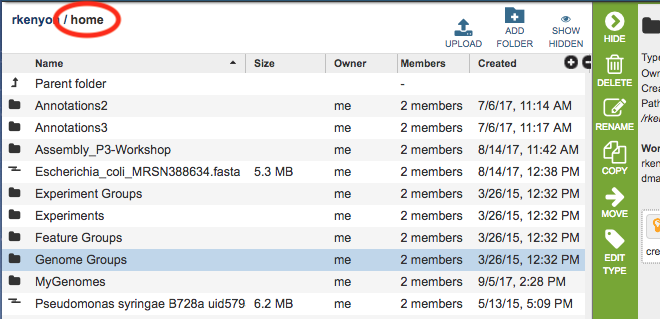
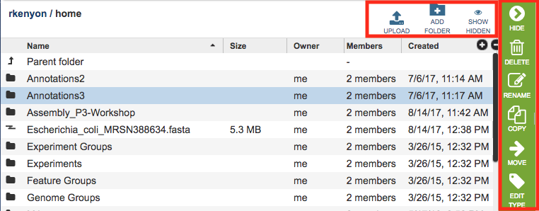
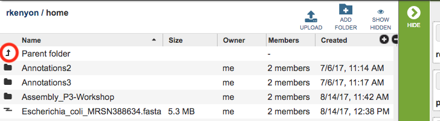
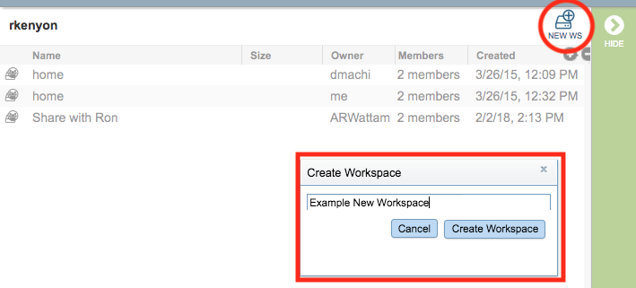
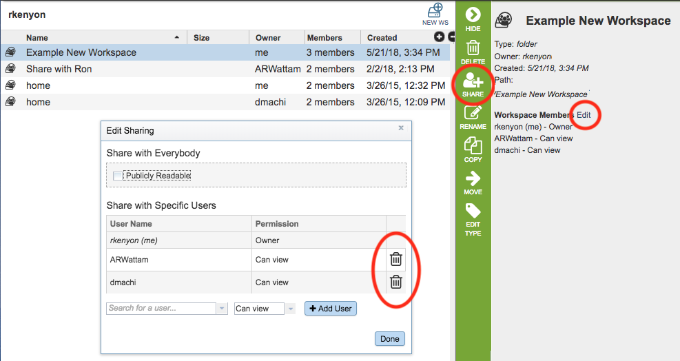

Private Workspace¶
Overview¶
The private Workspace provides a private area in the website for uploading data, running analysis services on the data, storing the analysis results, and managing groups of data created within the website.
See also:¶
Accessing the Workspace¶
Registration is required to use the Workspace. The registration link is at the top right corner of the website. If you have already registered, clicking the Login button beside the registration link will display the Login page.

After logging in, the Workspaces option in the top Menu Bar will become populated with the available workspaces for the logged-in user.

The default workspace is called “home,” which is the top level workspace containing all the files, folders, and job results for the logged in user. Additional shared workspaces may also be available (see Shared Workspaces below).

The table in the workspace lists the Names of folders and files, their Size (files only), the Owner (“me” unless the file or folder was shared by another user), other Members (users) with whom the workspace is shared, and when the file or folder was Created. Double-clicking a folder opens it and displays the contents. Double-clicking the “Parent Folder” at the top of the list moves back up the folder hierarchy and displays contents of the higher level folder.
Workspace Tools¶
Generally, within the Workspace, you can Upload files, Add Folders, and Show Hidden files and folders. Each of these is described below.

Upload¶
See Data Upload for details.
Add Folder¶
Initially, the home Workspace is pre-populated with several folders that correspond to common data types and are the default locations for data of those type, listed below. Additional custom folders can be created using the Add Folder button at the top right of the workspace table.
Experiment Groups
Experiments
Feature Groups
Genome Groups
Creating and Sharing Workspaces¶
Create New Workspace¶
Registered users can create new workspaces and share them with other registered users, if desired. Upon logging in, the default workspace shown is “home.” Clicking “Parent folder” at the top of the table in the home directory will display the root directory, which corresponds to the user name.

Within the root directory, new workspaces can be created. Clicking the Create Workspace button at the top right of the workspace table will open the Create Workspace dialog box which asks for a name for the new workspace:

Removing Sharing from Workspace¶
Sharing of the workspace can be removed by selecting the workspace name, clicking the Share Folder button in the Action Bar, or by clicking the “Edit” link beside the “Workspace Members” in the Information Panel on the right side and then clicking the “trashcan” icon beside the user’s name.
